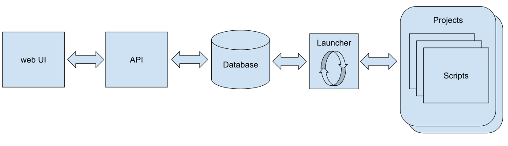

Компоненты системы автоматизации

Launcher (Планировщик)
Главный сервис фреймворка, который в бесконечном цикле:
- обновляет информацию о статусе работающих Обработок и Скриптов
- на основе анализа этой информации определяет следующий Скрипт для запуска
- запускает Скрипт с параметрами События
- исполняет команды управления
База Данных (Database)
- хранит всю информацию о конфигурации и текущем состоянии Системы
- передает команды от API Планировщику
Projects Scripts (Проекты и Скрипты)
Пользовательские папки со Скриптами. Не являются часть фреймворка, но должны соответствовать заданной структуре.
API
Интерфейс внешнего взаимодействия с фреймворком.
Web UI
Административный веб интерфейс взаимодействия с фреймворком.